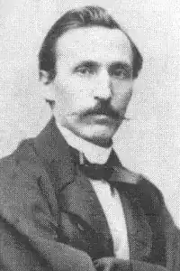
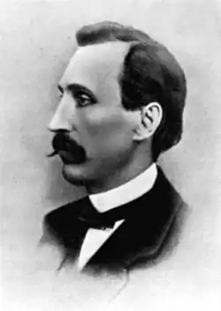

(1819 — 1897)
Світ живе не так, як собі мудрує на самоті душа поета.
П. Куліш Не чим іншим як історичним парадоксом слід називати те, що нині ми розпочинаємо знову, як робилася спроба наприкінці 20 — початку 30 років, розвивати деякі ідеї Куліша-культуролога, Куліша-історика. Багаторічне замовчування імен українських митців, вчених, громадських діячів, політиків, "виламування" з культурного фундаменту великих пластів далекого минулого, вульгарне, на догоду ідеологічно спекулятивним тезам, трактування культурного й суспільного розвитку спонукають нас до вивчення нашої духовної спадщини, щоб виважити, а може, й переоцінити усталені інтерпретації їх творчості, а також культурницької й політичної діяльності з позицій сьогодення. Звернімося до праць М. Костомарова, М. Грушевського, Д. Дорошенка, Д. Яворницького, а насамперед до П. Куліша. Звісно, не все в нього заслуговує на беззастережне схвалення. Багато його історичних концепцій зазнало деформацій під тиском тих соціально-політичних і культурних умов та обставин, в яких жив і творив Куліш. Але для того, щоб сказати чесне, вивірене архівними документами та грунтовними дослідженнями, слово про характер і першопричини цих деформацій історичного минулого, витворених Кулішем-істориком, треба опублікувати його доробок, який є на сьогодні унікальною бібліографічною цінністю. Прикро, що лише тепер ми розпочинаємо осягати велич Куліша без ідеологічних застережень, повільно і несміливо добираючись до його творінь. Та чи сповнимо ми бажання Ганни Барвінок, яка зберегла величезний архів свого чоловіка і в похилому віці турбувалася про видання повного зібрання його творів? Звернулася вона до історика і археолога Івана Михайловича Каманіна — директора Центрального архіву давніх актів у Києві, не лише тому, що той був добрим знайомим Пантелеймона Олександровича, а передусім тому, що мав великий досвід у публікації історичних документів, й, крім того, свого часу Іван Михайлович взяв під опіку величезний архів Куліша — ще вповні не опрацьовану рукописну скарбницю, в якій є багатюще листування письменника, рукописи творів, записки тощо. Переданий до утвореної Української Академії наук, цей архів "запрацював" на каманінське п'ятитомне Зібрання художніх творів Пантелеймона Куліша, як оригінальних, так і перекладних, яке розійшлося швидко. Каманіна не стало в 1920 році. Тоді дослідження творчості продовжили молоді літературознавці М. М. Могилянський, О. К. Дорошкевич, П. І. Рулін, М. К. Зеров, В. П. Петров, Є. П. Кирилюк. Та їх ініціатива не була підтримана. У наш час розпочинається "третя хвиля" видання і вивчення творчої спадщини одного з найпродуктивніших будителів національної самосвідомості українців, неодіозного, хоча й суперечливого мислителя, поборника національної самобутності українського народу, його мови і культури, палкого прихильника справедливих міжнаціональних взаємин, високої культури людського співжиття, гармонійної взаємодії цивілізації і природного середовища, технічного прогресу, моральних і загальнолюдських гуманістичних цінностей. Пантелеймон Куліш вірив, що його зрозуміють нащадки, пізнає благородство його трудів і замірів Україна. У вірші "На чужій чужині" він писав: Не забудеш мене, поки віку твого, моя нене Вкраїно, Поки мова твоя голосна у піснях, як срібло чисте дзвонить. На що глянеш, усюди згадаєш твого бідолашного сина; Туподумство людське, моя нене, від тебе його не заслонить. Готуючи до друку збірку сонетів "Друга камена", точніше, її рукописний варіант (цілком можливо, для дарунку), 10 травня 1925 року Микола Зеров елегантним почерком, вимальовуючи кожну літеру, переписав сонет "Куліш": Давно в труні Тарас і Костомара, Грабовський чемний, лагідний Плетньов; Сивіє розум і холоне кров; Літа минулі, мов бліда примара. Та він працює, Феніксом з пожару Мотронівка народжується знов; Завзяттям віє від його промов І в очах відблиск молодого жару. Він боре тупість і муругу лінь, В Європі хоче ставити курінь, Над творами культурників п'яніє. І днів старечих тягота — легка, І навіть в смертних муках агонії В повітрі пише ще його рука. В наші дні далеко не кожному зрозуміле таке закодоване в образах життя видатного українського письменника, історика, критика, публіциста, етнографа, мовознавця, культурного діяча Пантелеймона Олександровича Куліша, але в ті, далекі вже від нас, 20-і роки XX ст., його ім'я було популярним. У збірнику "Революційні поезії", виданому в Харкові у 1920 році з метою прилучення широкого українського читача до національної поетичної скарбниці, поряд із поезіями Івана Котляревського і Тараса Шевченка, Євгена Гребінки і Михайла Старицького, Павла Грабовського та Івана Франка, Лесі Українки і Олександра Олеся, Грицька Чупринки і Спиридона Черкасенка, Павла Тичини і Василя Чумака вміщена дума П. Куліша "Кумейки". Тогочасним революційним настроям були співзвучні заключні її рядки: Нехай знають на всім світі, Як ми погибали І, гинучи, свою правду Кров'ю записали. Записали — прочитають Неписьменні люде, Що до суду із шляхетством Згоди в нас не буде. Поки Рось зоветься Россю, Дніпро в море ллється, Поки серце українське З панським не зживеться. Правда, у своєму прагненні посилити соціальне спрямування думи упорядник збірки замінив в передостанньому рядку слово "українське" на — "мужицькеє". Тоді самодіяльність була не рідкістю. Звичайно, сучасний читач може дещо критично сприйняти процитований вище сонет, зокрема, подивуватися, скажімо, з того, що такий високоосвічений вчений і блискучий стиліст, тонкий цінитель поетичної форми, як М. Зеров, дозволив собі задля рими до слова "примара" деформувати прізвище відомого історика Миколи Костомарова. Не поспішаймо, одначе, з висновком. Зеров був великим знавцем життя і творчості П. Куліша і не раз зустрічав у його епістолярній спадщині дружнє "Костомара". Так, у листі до Т. Г. Шевченка від 1 лютого 1858 року читаємо: "Що за добро було б, якби нас Господь докупи звів да якби ми пожили по-сусідськи хоть один рік, да й Костомару до себе приманили. Порозумнішали б усі троє! Що ж, коли йдемо різно трьома шляхами!" На час написання цього листа минуло вже 14 років від осіннього дня 1844 року, коли Пантелеймон Куліш познайомився з молодим істориком Миколою Костомаровим. Правда, в 1874 році вони поконфліктували, а через шість років розійшлися назавжди, але як багато їх єднало! Адже, по суті, трійця — Шевченко, Костомаров і Куліш — була духовним осердям заснованого в Києві Кирило-Мефодіївського товариства, участь у якому так драматично позначилася на їхніх долях. До часу, коли з'явився сонет, складний, суперечливий життєвий і творчий шлях автора першого в українській літературі історичного роману "Чорна рада" досліджувався активно, в дискусіях. Молодий тоді Є. Кирилюк готував "Бібліографію праць П. О. Куліша та писань про нього", яка з'явилася друком в 1929 році, у Львові вийшла книга В. Щурата "Філософічна основа творчості Куліша" (1922), М. Грушевський друкує в журналі "Україна" (1927, ч. 1 — 2) грунтовну розвідку "Соціально-традиційні підоснови Кулішевої творчості", інший український історик Д. Дорошенко видає в 1918 році книгу "Пантелеймон Куліш, його життя й літературно-громадська діяльність", а молодий літературознавець, згодом — відомий історик, археолог і прозаїк В. Петров друкує підряд — у 1929 і 1930 роках — дві праці: "Пантелимон Куліш у п'ятдесяті роки. Життя. Ідеологія. Творчість" і "Романи Куліша". До речі, особисте, точніше, бурхливе інтимне життя Куліша тоді цікавило багатьох вчених. Так, О. Дорошкевич звернув увагу на його взаємини з юною Л. Милорадовичівною й видав у 1927 році книжку "Куліш і Милорадовичівна". Великим імпульсом для такого широкого і активного інтересу до життя і творчості П. Куліша був і його 100-літній ювілей, який припав на тривожний 1919 рік. М. Зеров на той час редагував "Літопис українського письменства" — журнал "Книгар", де в липнево-серпневому номері з'явився ряд статей, присвячених його культурно-громадській діяльності, творчості як літературного критика, аналізу поетичної спадщини, віршованих перекладів Біблії, етнографічній діяльності. Досліджувалися праці П. Куліша, пов'язані з вивченням і виданням творів М. Гоголя, підбивалися підсумки роботи щодо видання творів самого Куліша. М. Зеров згодом написав грунтовну передмову "Поетична діяльність Куліша" до збірки поета, що мала видати "Книгоспілка". Важко навіть перелічити ті видання оригінальних його творів й наукових праць про життя і діяльність митця, які здійснювалися в перші пореволюційні десятиліття. На особливу увагу заслуговує така підготовлена і видана Українською Академією наук 1927 року праця, як "Пантелеймон Куліш. Збірник праць комісії для видавання пам'яток новітнього письменства", а також видання творів П. Куліша 1931 року. Були серйозні наміри опублікувати всю спадщину видатного письменника та історика. Про це свідчить шеститомне (найповніше й до сьогодні) видання його творів у Львові (1908 — 1910 рр.), незавершене — лише в п'яти томах — у Києві (1908 — 1910 рр.), хоча планувався двадцятитомник. Згадаймо тут добрим словом невтомного Б. Лепкого, який видав п'ятитомне зібрання творів П. Куліша у Берліні (1922 — 1923 рр.) у серії "Українське слово". Наприкінці 20-х років на Радянській Україні також була розпочата співробітниками Інституту літератури ім. Т. Г. Шевченка АН УРСР підготовка багатотомного — у 25 томах — видання, але з'явилося лише три — 1,3 і 6-й томи (1930 — 1931). У передмові до цього видання О. Дорошкевич писав, що "до повного академічного видання багатющої Кулішевої спадщини (що забере не менш, як 50 великих томів) ми можемо прийти лише за яке десятиліття". Але впродовж десятиліть після того запанувало майже повне (1939 року вийшла "Чорна рада. Хроніка 1663 року" з передмовою В. Гуфельза) мовчання аж до 1969 року. Ні, не тільки мовчання, а й розвінчування Куліша — "буржуазного націоналіста", "ворога Шевченка" (в цих стараннях наші шевченкознавці були попереду). Лише у 1969 році вийшов скромний однотомник П. Куліша у видавництві "Дніпро", а в 1970-му — збірка "Поезії" у серії "Бібліотека поета". Звісно, дослідники знають про численні студії, присвячені спадщині П.